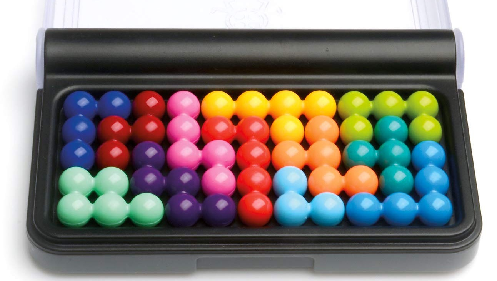
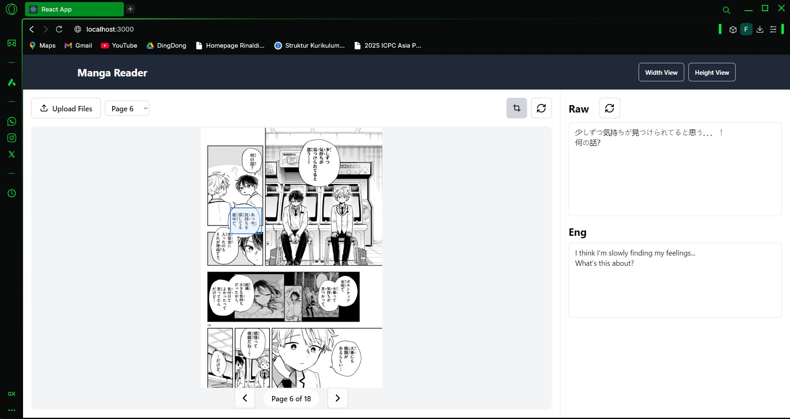
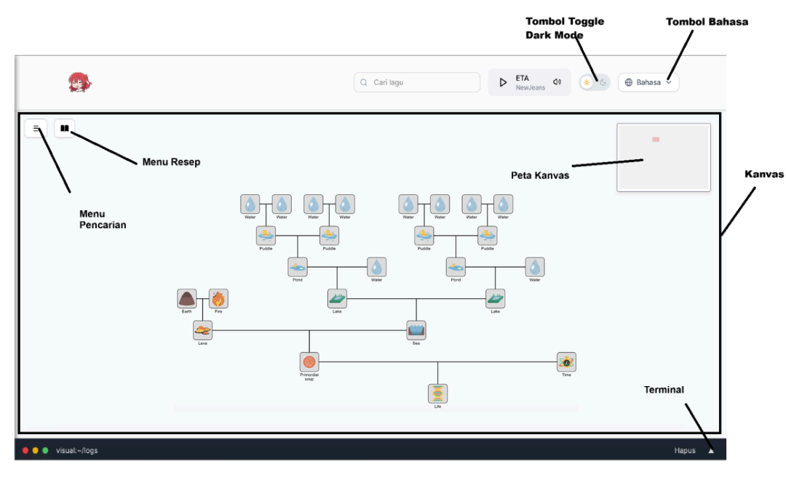
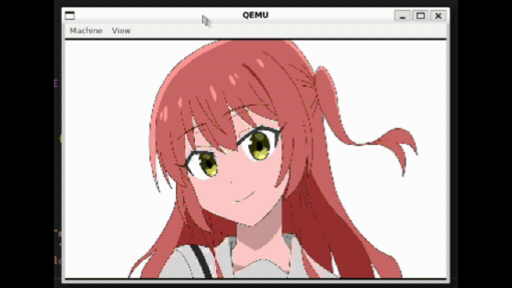
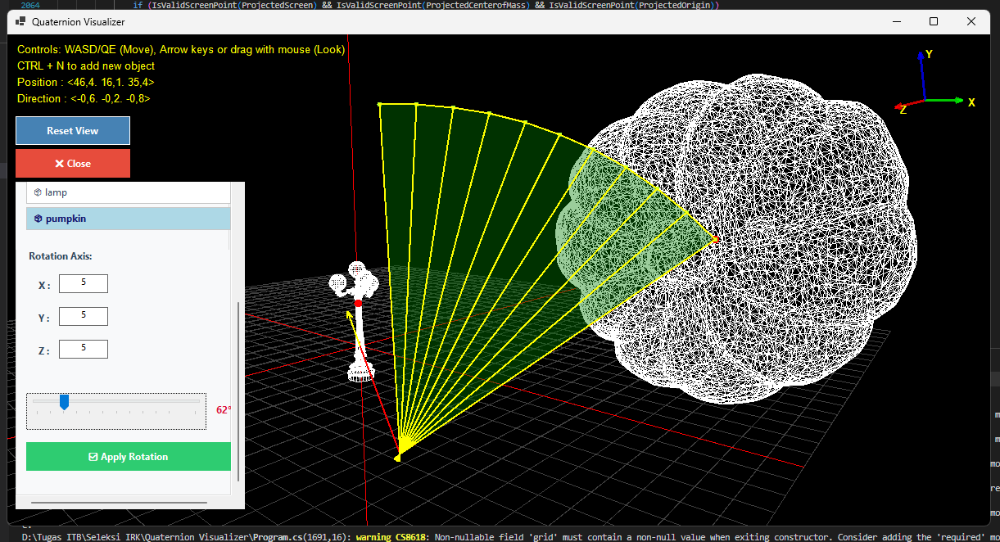

This is a 3 person project where i contributed for the main logic of the program. The main feature including : Matrix Operation, Linear System Equation Solver, Linear & Quadratic Regression, Interpolation, and Image Resizer
View Project →

This project is an assignment for the IF2211 Strategi Algoritma course. The purpose of this assignment is to deepen our understanding ofm brute-force algorithms in problem-solving by implementing and analyzing their effectiveness in various scenarios. Through this project, we explore the strengths and limitations of brute-force approaches, gaining insights into their practical applications and computational complexity.
View Project →

MyRead is a web-based application that allows users to read and translate raw manga at the same time. This app utilizes advanced OCR and translation technologies to provide an immersive reading experience.
View Project →
This project is a bot developed for the Robocode platform, where users create and train robotic tanks to compete in battles. The bot utilizes advanced algorithms and strategies to outmaneuver opponents and achieve victory in the arena.
View Project →
This project implements a quadtree-based image compression algorithm, which efficiently reduces the size of images while preserving important visual information. The algorithm recursively partitions the image into quadrants and applies compression techniques to each quadrant (CLI based usage).
View Project →

Web-Based Application to search for recipe from Little Alchemy 2 game. This application implements DFS, BFS, and Bidirectional search to search for the target recipe. For BFS and DFS, the app will start searching from the parent (the target element), and ends if all the leaf is base elements.
View Project →

KeOSskuBand Operating System project is a hands-on journey into low-level system development, where we build a simple yet functional operating system from scratch in protected mode x86. The project starts by setting up the toolchain, writing a minimal C and assembly kernel, and configuring the Global Descriptor Table (GDT). From there, we implement essential drivers and mechanisms such as a text framebuffer for display output, keyboard input handling, and an interrupt system with an Interrupt Descriptor Table (IDT), Interrupt Service Routines (ISR), and PIC remapping. The system is then extended with a custom EXT2-like filesystem, allowing basic file and directory management alongside a command-line shell interface. In the next stages, we explore memory management through paging, enable kernel-to-user mode transitions, and implement system calls to connect user programs with kernel services. Finally, the OS is enhanced with process management, a scheduler, and multitasking support, enabling multiple user programs to run concurrently. By the end, the project demonstrates how fundamental concepts such as interrupts, memory management, file systems, and process scheduling come together to form the core of an operating system.
View Project →

The Quaternion Visualizer is a C# Windows Forms application that demonstrates 3D object rotations using quaternions, Rodrigues’ formula, rotation matrices, and Euler angles. Featuring a custom-built rendering engine without external graphics libraries, it allows users to load .obj models, manipulate objects interactively, and visualize rotation axes, centers of mass, and arcs in real time. The project highlights the advantages of quaternions while offering an intuitive tool to compare different rotation methods in three-dimensional space.
View Project →